Peran organisasi, produksi film, pengalaman internasional, hingga minat pribadi yang membentuk keseharian saya di luar bangku kuliah.
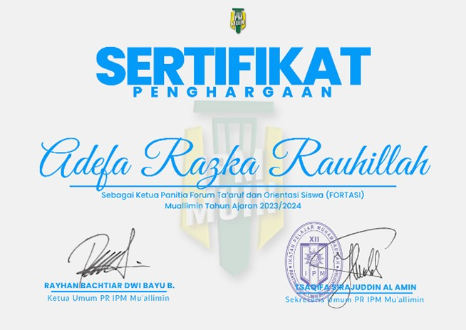
Saya dipercaya sebagai ketua FORTASI yang diselenggarakan oleh PR IPM Mu'allimin pada tahun 2023 — mengoordinasikan tim, menyusun konsep acara, serta memastikan seluruh rangkaian kegiatan berjalan terarah, edukatif, dan berkesan bagi peserta.
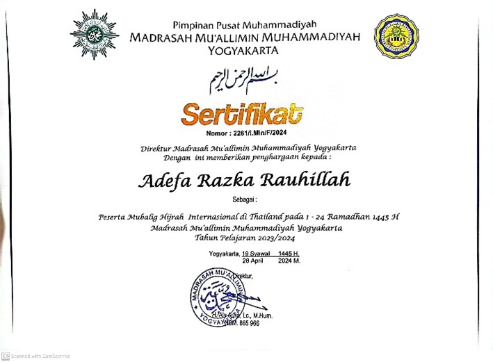
Saya berpartisipasi sebagai anggota dalam program Mubaligh Hijrah Internasional Thailand 1445H — terlibat dalam aktivitas dakwah dan sosial di lingkungan masyarakat, sekaligus mengasah komunikasi lintas budaya, adaptasi, serta wawasan global.
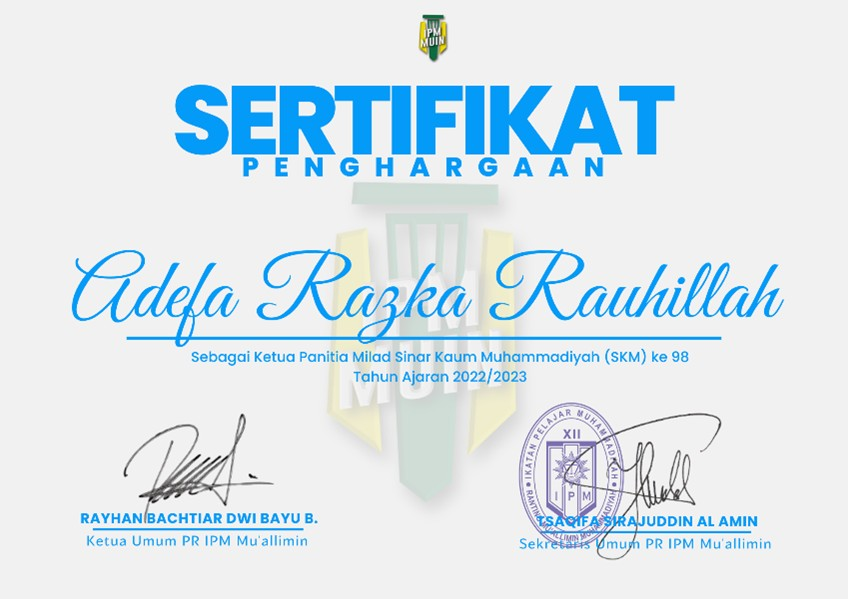
Saya dipercaya sebagai ketua panitia dalam perayaan Milad Sinar Kaum Muhammadiyah ke-98 2023 — mengatur perencanaan acara, membagi tugas tim, serta memastikan pelaksanaan kegiatan berjalan lancar, terstruktur, dan sesuai tujuan.
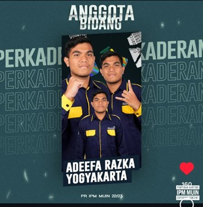
Saya mendukung proses pembinaan dan pengembangan kader organisasi — terlibat dalam perencanaan serta pelaksanaan program untuk meningkatkan kualitas anggota, baik dari segi kepemimpinan, pemahaman organisasi, maupun karakter.
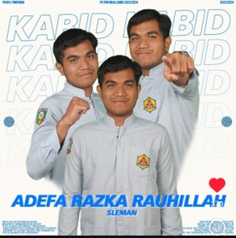
Saya memimpin tim, menyusun strategi pembinaan, serta memastikan pelaksanaan kegiatan berjalan efektif dalam meningkatkan kualitas kepemimpinan, pemahaman organisasi, dan karakter anggota.
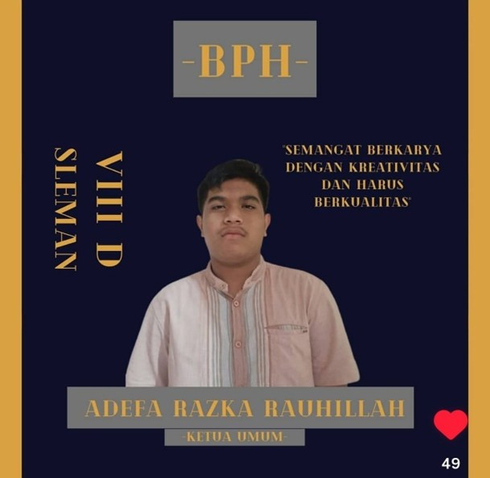
Saya menjabat sebagai ketua komunitas Leader Community di bawah naungan PR IPM Mu'allimin periode 2020/2021 — mengoordinasikan anggota, merancang kegiatan pengembangan diri, serta mendorong lingkungan yang aktif dan kolaboratif.
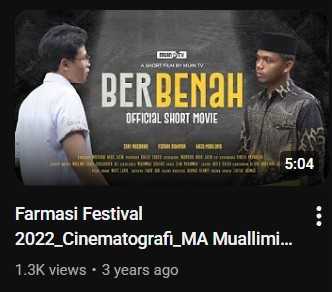
Saya berperan sebagai editor dalam produksi film pendek Berbenah yang berhasil meraih juara 3 — bertanggung jawab dalam penyuntingan video, penyusunan alur cerita, serta pengolahan visual agar pesan tersampaikan efektif dan menarik.
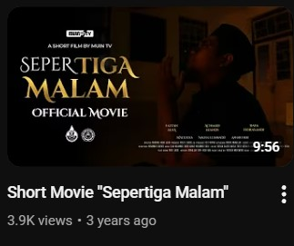
Saya berperan sebagai editor dalam produksi film pendek Sepertiga Malam yang berhasil meraih juara 3 — bertanggung jawab dalam penyuntingan video, penguatan alur cerita, serta pengolahan visual agar pesan tersampaikan lebih mendalam dan emosional.
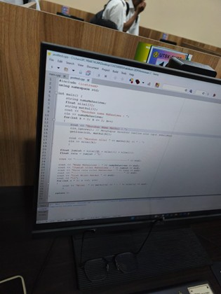
Saya memiliki hobi di bidang pemrograman dengan menguasai beberapa bahasa seperti C++, PHP, JavaScript, CSS, dan HTML — membangun logika pemrograman, memahami struktur aplikasi, serta menciptakan solusi digital sederhana.
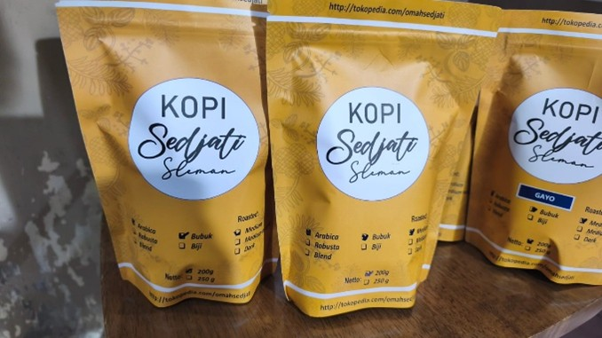
Saya terlibat dalam pengembangan bisnis keluarga Kopi Sedjati yang bergerak di bidang penjualan kopi bubuk, kopi literan, dan biji kopi — berkontribusi dalam pemasaran, pengelolaan produk, serta pengembangan strategi usaha.
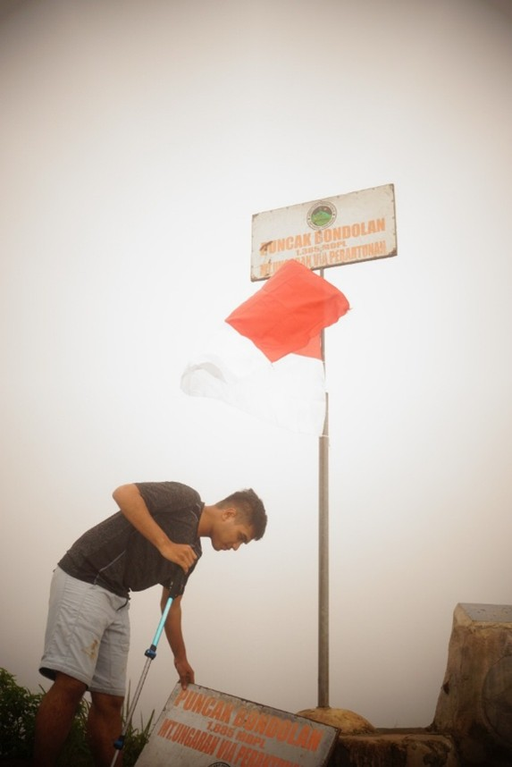
Saya memiliki hobi mendaki gunung sebagai aktivitas menantang sekaligus sarana refleksi diri. Beberapa gunung yang telah saya daki: Sindoro, Ungaran, Sumbing, Merbabu, Lawu, Prau, dan Andong — mengasah ketahanan fisik, mental, serta kerja sama tim.
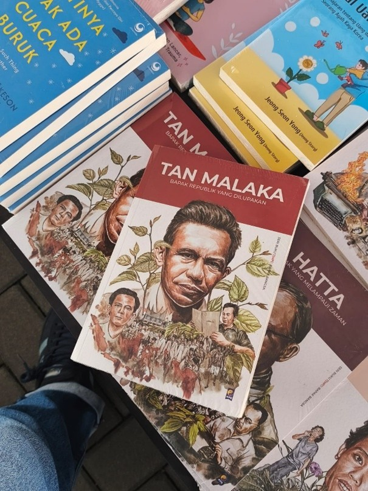
Saya memiliki hobi membaca buku sebagai sarana memperluas wawasan dan memperdalam pemahaman terhadap berbagai bidang pengetahuan — melatih kemampuan berpikir kritis dan memperkaya perspektif.
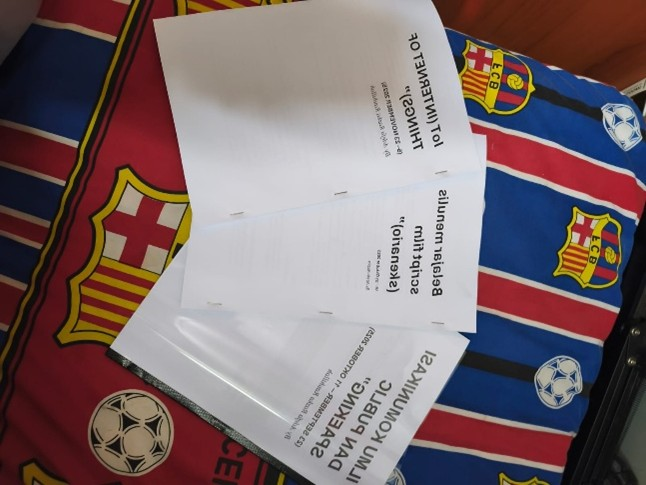
Saya memiliki hobi menulis sebagai sarana mengekspresikan ide, gagasan, dan refleksi pribadi — mengembangkan kemampuan berpikir terstruktur, komunikasi tertulis, serta kepekaan menyampaikan pesan secara jelas dan bermakna.
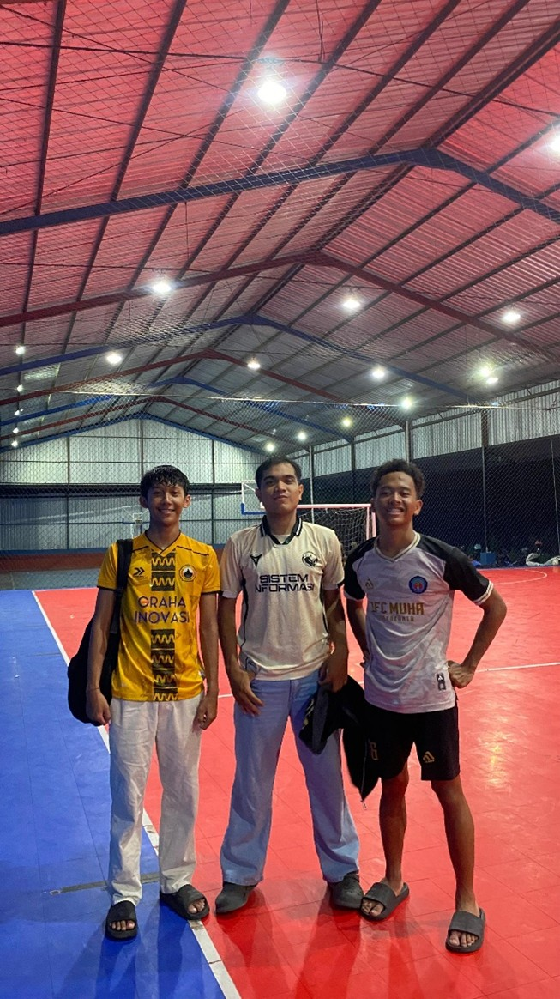
Saya memiliki hobi bermain futsal sebagai aktivitas fisik yang juga melatih kerja sama tim, strategi, dan kedisiplinan — mengembangkan koordinasi, komunikasi di lapangan, serta menjaga kebugaran tubuh secara konsisten.
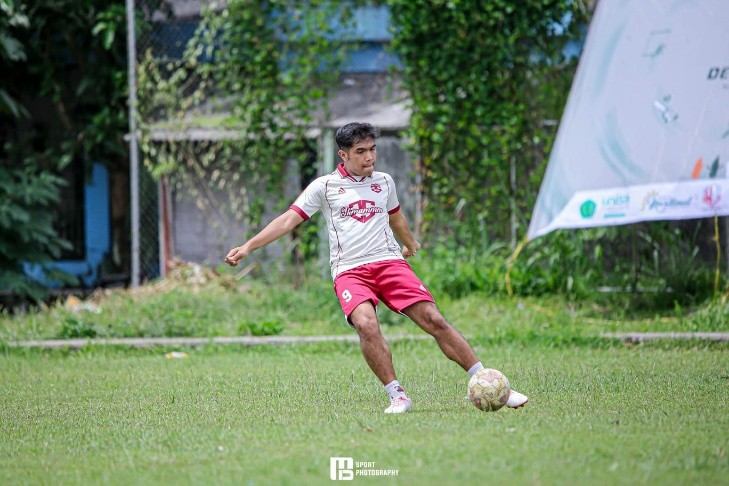
Saya memiliki hobi bermain sepak bola sebagai aktivitas yang menjaga kebugaran fisik sekaligus melatih kerja sama tim, strategi, dan daya tahan — mengembangkan koordinasi, komunikasi, serta mental kompetitif.
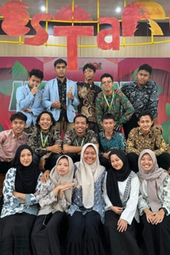
Saya bergabung dengan lembaga media PW IPM DIY periode 2022/2025 — berkontribusi dalam produksi konten, pengelolaan informasi, serta penyampaian pesan organisasi secara kreatif dan informatif kepada publik.
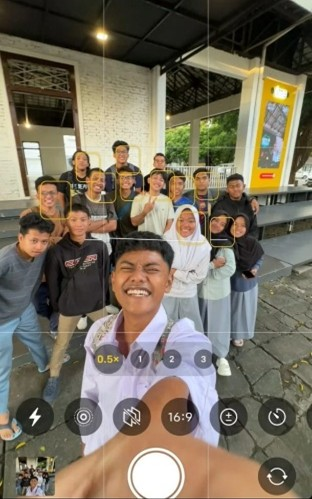
Saya bergabung dengan lembaga pers PD IPM Kota Yogyakarta periode 2022/2024 — terlibat dalam produksi konten, pengelolaan informasi, serta penyampaian berita dan pesan organisasi secara komunikatif dan bertanggung jawab.
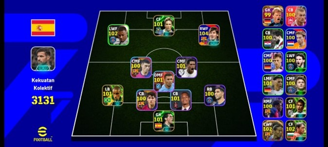
Saya memiliki hobi bermain game eFootball sejak tahun 2013 sebagai hiburan sekaligus sarana melatih strategi, fokus, dan pengambilan keputusan — mengembangkan analisis permainan, ketelitian, serta konsistensi mencapai target.
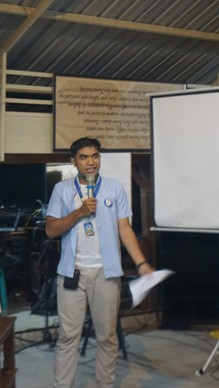
Saya terlibat sebagai panitia dalam berbagai kegiatan angkatan di kampus — berkontribusi dalam perencanaan, koordinasi, serta pelaksanaan acara, sekaligus mengasah kerja sama tim, komunikasi, dan manajemen kegiatan.
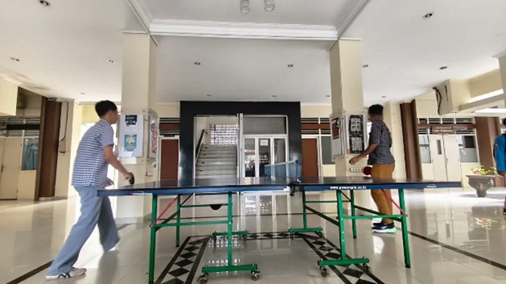
Saya memiliki hobi bermain pingpong sebagai aktivitas olahraga yang melatih refleks, konsentrasi, dan koordinasi tangan-mata — sekaligus menjaga kebugaran fisik dan mengasah ketangkasan.
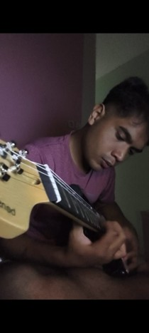
Saya memiliki hobi bermain gitar sebagai sarana mengekspresikan kreativitas dan menyalurkan minat di bidang musik — mengembangkan koordinasi, ketekunan berlatih, serta kemampuan mengekspresikan emosi melalui musik.
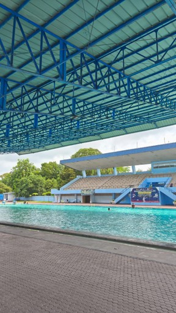
Saya memiliki hobi berenang sebagai aktivitas olahraga yang membantu menjaga kebugaran fisik dan kesehatan tubuh — melatih daya tahan, kekuatan otot, serta kedisiplinan menjaga rutinitas olahraga.